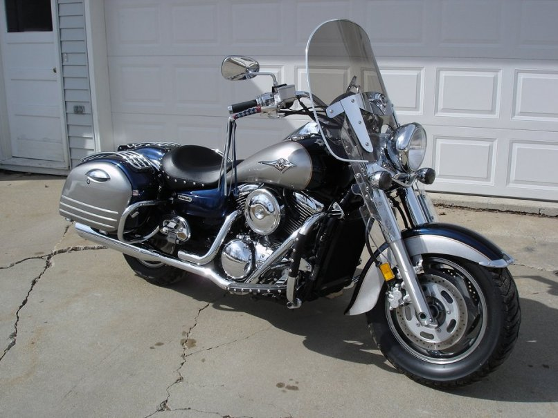

This is a 2005 Nomad, and represents the last repairable motorcycle I bought. I mostly made repairs to the headlight, front fender, replaced the windshield, and added accessories. I sold it to a lady in Prescott, Wi., she bought it for her husbands birthday.